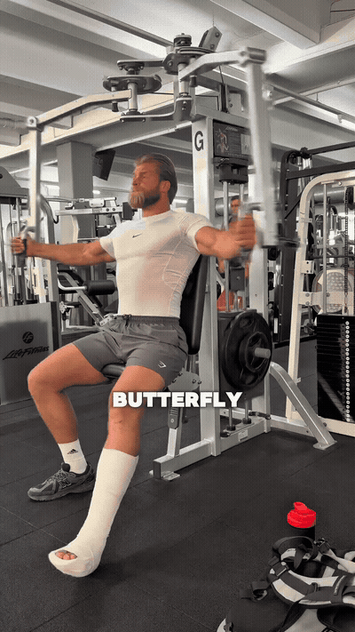
The reel opens its Push day with a butterfly machine chest fly.
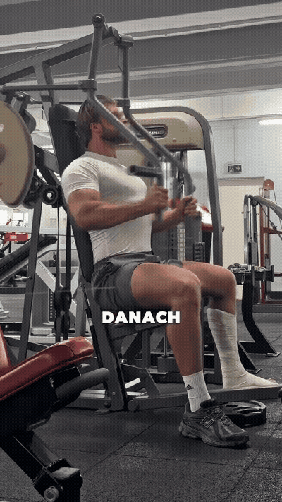
A chest press for the upper chest, described immediately after the butterfly movement.
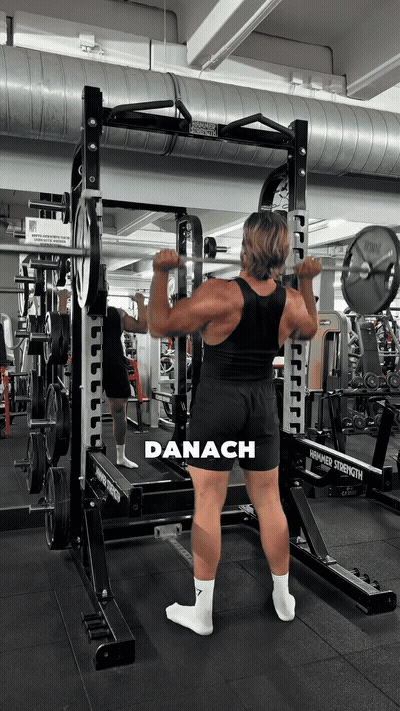
Overhead shoulder pressing for the anterior deltoids.
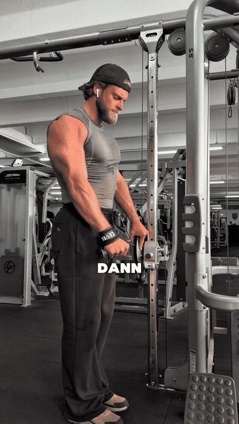
A side-delt raise, described as the next Push movement.
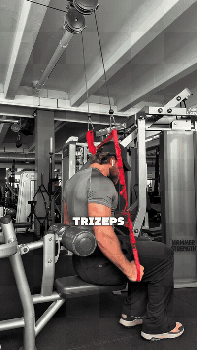
Cable triceps extensions finish the Push day.
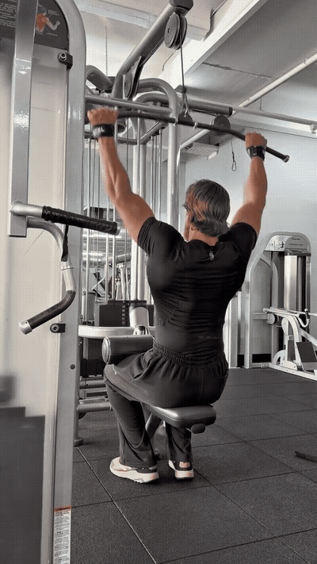
The first Pull-day slot is a wide-grip lat pulldown or, as the creator offers, pull-ups.
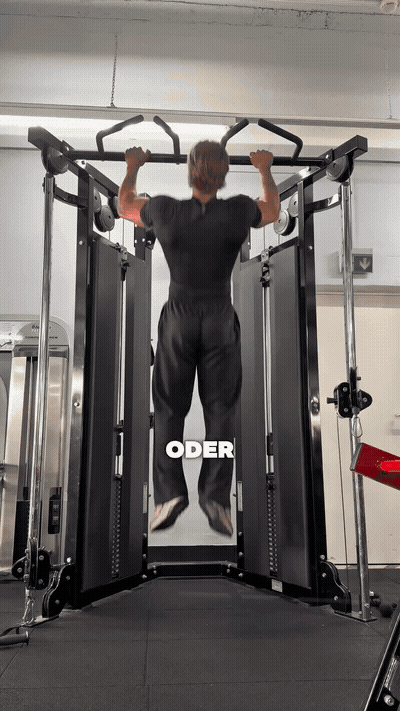
A T-bar row for the upper back, listed after the wide-grip vertical pull.
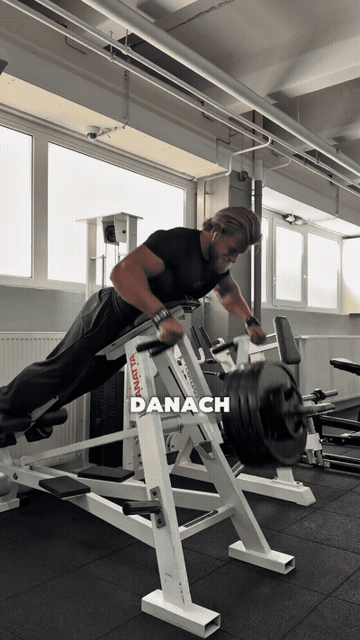
A unilateral row used for a different lat emphasis, according to the creator.
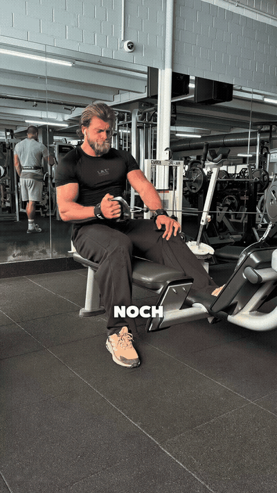
Curls close the Pull day.
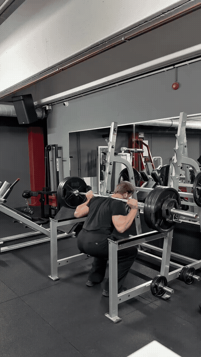
Barbell squats begin the Legs day.
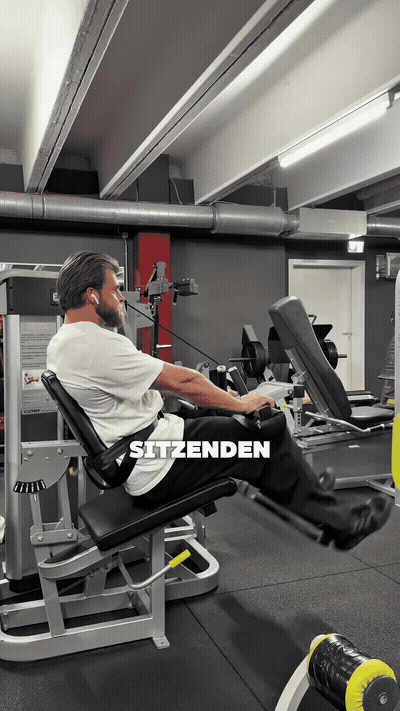
A seated hamstring curl follows the squat.
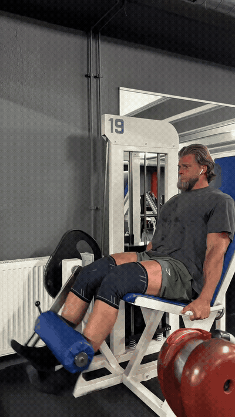
The creator then programs a leg extension for the quadriceps.
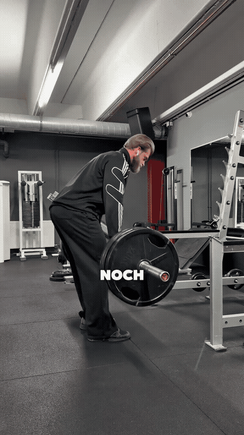
The transcript’s unclear ‘ADLs’ is interpreted from context as RDLs: a hinge for the lower back, glutes, and posterior thigh.
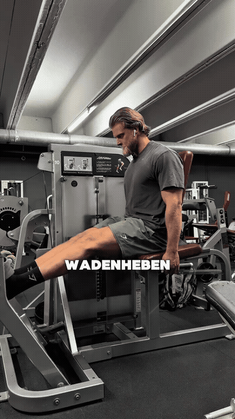
Standing calf raises finish the Legs day.